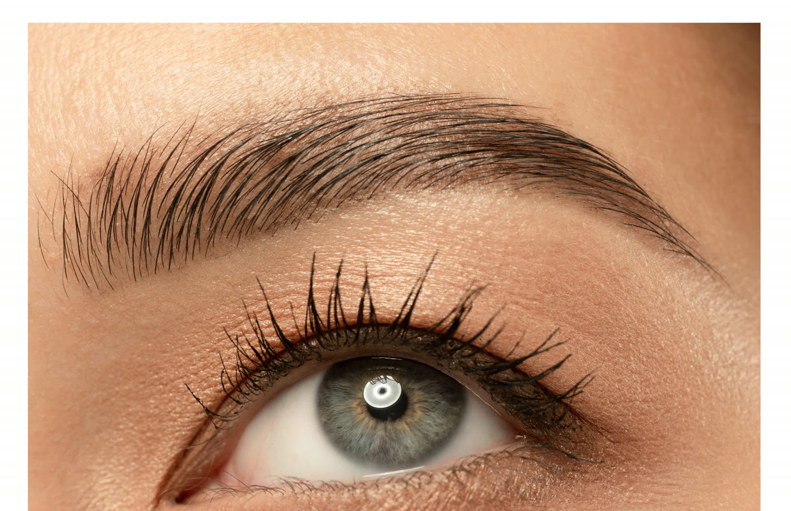

5 września 2026
Makijaż permanentny brwi - którą metodę wybrać?
Technika włoskowa, pudrowe brwi czy metoda łączona - czym się różnią, dla kogo się sprawdzają i jak długo utrzymuje się efekt każdej z nich.
Czytaj więcej →